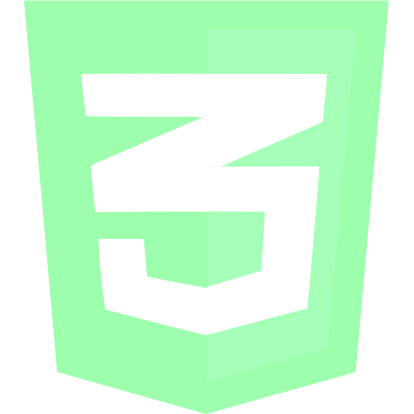
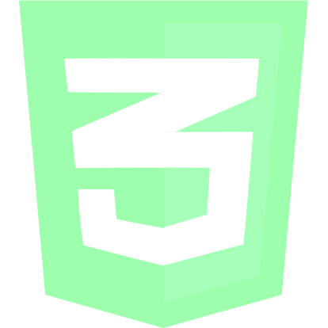

- Intro
- Emojis
- Spin Box
- Spinning Background
- 3d Box
- FAB
- X-Wing
Hey there! Thanks for checking out my site, CSSfx
Navigation is easy, but let me walk you through it
The site is divided into a handful of sections
Each section has a CSS demo on the left, code on the right
Code will only appear if your browser window is wider than 800px
To navigate between sections, use the up and down arrows,
click on section titles in the menu above, or scroll like you normally would
Alright - that about covers it! Thanks for coming, have fun!
 

1
2
3
4
5
6
GOOEY!
Pretty cool feature in CSS3 - multiple backgrounds
with distinct transiions. This lets you serve up
some pretty cool animation with almost no work at
all. Without the javascript, the X-Wing would still
fly across the stars, it just wouldn't follow your
cursor
<div class="space"></div>
.space {
margin: auto;
width: 800px;
height: 100vh;
background: url('./x-wing.png') no-repeat center 150px,
url('./stars2.jpg'), no-repeat top right;
transition: background-position 8s;
}
.space:hover {
background-position: 400px 350px, bottom left;
}
$('.space').mousemove(function (e) {
var offset = $(this).offset();
var relativeX = (e.pageX - offset.left);
$('.space').hover(() => {
$(this).css({
'background-position': `${relativeX}px 350px, bottom left`
});
}, () => {
$(this).css('background-position', 'center 150px, top left');
});
$('.space').trigger('mouseleave').trigger('mouseenter');
});
Mmmm... such nice buttons...
For an extra fun time, use the 1-6 keys to make the box dance
<figure class="box-figure" id="3">
<div class="container">
<div class="box show-front">
<span class="rface rfront"><br/>1</span>
<span class="rface rback"><br/>2</span>
<span class="rface rright"><br/><div id="flip3">3</div></span>
<span class="rface rleft"><br/><div id="flip4">4</div></span>
<span class="rface rtop"><br/>5</span>
<span class="rface rbottom"><br/>6</span>
</div>
</div>
<div class="buttons" id="buttons">
<div class="button" data-face="show-front">1</div>
<div class="button" data-face="show-back">2</div>
<div class="button" data-face="show-right">3</div>
<div class="button" data-face="show-left">4</div>
<div class="button" data-face="show-top">5</div>
<div class="button" data-face="show-bottom">6</div>
</div>
</figure>
.box {
height: 100%;
width: 100%;
position: absolute;
transform-style: preserve-3d;
transition: transform 1s;
}
.show-front {
transform: translateZ(-50px) translatex(11px);
}
.show-back {
transform: rotateX(-180deg) translateY(200px) translateZ(50px) translatex(10px);
}
.show-bottom {
transform: rotateX(90deg) translatez(100px) translatex(7px);
}
/* etc... */
.face {
display: block;
position: absolute;
border-radius: 5px;
border: 2px solid white;
color: white;
text-align: center;
font-size: x-large;
}
.front, .back, .top, .bottom {
width: 300px;
}
.front, .back, .left, .right {
height: 200px;
}
.left, .right {
width: 100px;
left: 100px;
}
.top, .bottom {
height: 100px;
top: 50px;
line-height: 35px;
}
.front {
transform: translateZ(50px);
}
.back {
transform: rotateX(180deg) translateZ(50px);
}
.top {
transform: rotateX(90deg) translateZ(100px);
}
/* etc... */
document.getElementById('buttons').addEventListener('click', (e) => {
document.getElementsByClassName('box')[0].className = `box ${e.target.dataset.face}`;
});
$(document).on('keyup', (e) => {
var box = document.getElementsByClassName('box')[0];
switch (e.which) {
case 49:
box.className = 'box show-front';
break;
case 50:
box.className = 'box show-back';
break;
case 51:
box.className = 'box show-right';
break;
case 52:
box.className = 'box show-left';
break;
case 53:
box.className = 'box show-top';
break;
case 54:
box.className = 'box show-bottom';
break;
}
});
In addition to the spinning CSS3 logo, this screen demos
a very cool CSS effect called parallax scroll. Especially
cool here, because the left and right panes each display
separate backgrounds and have to line up perfectly in the
middle for the effect to work. CSSfx is a lot of work for
the browser, but this screen in particular forced me to use
a performace-enhancing CSS property - 'contain.'
<div class="spinner-container" id="2">
<div class="spinner">
<img id="front" src="./public/images/css_purple2.png" alt="" />
<img id="back" src="./public/images/css.png" alt="" />
</div>
</div>
.section3, .layered-spinner {
background-position: 0% 0%;
width: 100%;
background-repeat: no-repeat;
background-attachment: fixed;
background-size: cover;
background-image: url('./images//stars4.jpg');
}
.spinner-container {
perspective: 800px;
margin: 200px 0px;
}
.spinner {
margin: auto;
position: relative;
display: block;
position: relative;
margin: 30px auto;
background-blend-mode: luminosity;
transform-style: preserve-3d;
background-image: url('./images/css_darkblue.png');
background-size: cover;
}
.spinner:hover {
animation: animate-y 5s infinite linear;
}
@keyframes animate-y {
0% { -webkit-transform: rotateY(0); transform: rotateY(0); }
100% { -webkit-transform: rotateY(360deg); transform: rotateY(360deg); }
}
.spinner, #front, #back {
height: 256px;
width: 256px;
}
#front, #back {
position: absolute;
backface-visibility: visible;
}
#front {
transform: translateZ(100px);
}
#back {
transform: translateZ(-100px);
}
Who doesn't like a good box full of stars?
<figure class="rotating" id="1">
<div class="container">
<div class="cube showbf">
<div class="face front"></div>
<div class="face back"></div>
<div class="face right"></div>
<div class="face left"></div>
<div class="face top"></div>
<div class="face bottom"></div>
</div>
</div>
</figure>
.container {
height: 400px;
border: none;
perspective: 1000px;
perspective-origin: 50% 50%;
}
.cube {
width: 200px;
height: 200px;
transform-style: preserve-3d;
}
.cube .face {
display: block;
position: absolute;
width: 100%;
height: 100%;
font-size: 60px;
color: white;
text-align: center;
transition: transform .3s;
}
.face:hover {
outline: 2px dodgerblue dashed;
border: none;
background-color: rgba(100,149,237,.8);
}
.front {
background: url('./image.png');
background-size: cover;
transform: translateZ(100px);
}
.rotating .container:hover .front {
border: 2px solid white;
transform: translateZ(275px);
}
...
.right {
background: url("./image.png");
background-size: cover;
transform: rotateY(-270deg) translateZ(100px);
}
.rotating .container:hover .right {
border: 2px solid white;
transform: rotateY(-270deg) translateZ(275px);
}
...
.top {
background: url('./image.png');
background-size: cover;
transform: rotateX(-270deg) translateZ(100px);
}
.rotating .container:hover .top {
border: 2px solid white;
transform: rotateX(-270deg) translateZ(275px);
}
...
@keyframes rotate {
from {-webkit-transform: rotateX(0deg) rotateY(0deg);transform: rotateX(0deg) rotateY(0deg);}
to {-webkit-transform: rotateX(360deg) rotateY(360deg);transform: rotateX(360deg) rotateY(360deg);}
}
.rotating .container .cube {
transform: rotate 20s infinite linear;
animation: rotate 20s infinite linear;
}
You mean to tell me you did this with NO JAVASCRIPT!?!
Here, and just about everywhere else, you can hover.
I'm particularly proud of these little emojis. Forget
the transition a minute - the rounded corners of the
smiley's mouth and the upper curve of its teeth are
already outside the normal scope of CSS, better suited
to scalable vector graphics. But this site isn't about
being practical, it's about pushing CSS to its limits!
<figure class="emoji" id="1">
<span class="head">
<span class="one eye"></span>
<span class="two eye"></span>
<span class="left-cheek"></span>
<span class="right-cheek"></span>
<span class="upperlip"></span>
<span class="mouth"></span>
</span>
</figure>
.head, .eye, .mouth {
display: block;
}
.head {
position: absolute;
top: 30%;
left: 45%;
height: 150px;
width: 150px;
border-radius: 50%;
background: radial-gradient(at 50% 50%, #ffe02d 30%, #e98442 95%);
transform: scale(.65);
transform-origin: center bottom;
transition: 1.25s transform cubic-bezier(.87,-.41,.19,1.44);
}
.head:hover {
transform: scale(1.2);
}
.head::before {
content: "";
background: radial-gradient(ellipse at center, rgba(0, 0, 0, 0.15) 0%, rgba(0, 0, 0, 0) 80%);
height: 10%;
width: 55%;
top: 100%;
position: absolute;
left: 23%;
opacity: 1;
transition: all 1.25s cubic-bezier(.87,-.41,.19,1.44);
}
.head:hover::before {
opacity: .75;
width: 75%;
left: 15%;
top: 116%;
}
.head::after {
content: "";
height: 65px;
width: 114px;
border-radius: 90px 90px 0 0;
background-image: linear-gradient(rgba(255, 255, 255, 0.54) 0%, rgba(255, 224, 45, 0) 100%);
display: block;
top: 12px;
left: 18px;
position: absolute;
}
.eye {
height: 34px;
width: 23px;
border-radius: 50%;
background: radial-gradient(at 50% 50%, saddlebrown 30%, #4d3017 100%);
z-index: 99;
box-shadow: 1px 1.5px 0px #ffff6f, -1px 1.5px 0px #ffff6f, inset -.5px -.5px 4px #331e0a,inset 0.5px 0.5px 4px #331e0a;
position: absolute;
transform: scale(.7);
transition: all 1s;
transition-delay: .25s;
top: 55px;
}
.head:hover .eye {
transform: none;
}
.eye::after {
content: "";
height: 17px;
width: 17px;
position: absolute;
left: 3px;
border-radius: 7px 3px 11px 3px;
top: 40px;
transform: rotateZ(45deg) rotateX(90deg);
box-shadow: 0 0 0px #ffff6f, 0 0 0 #f9cc01, 0 0 0 rgb(255, 217, 0);
background: linear-gradient(#ffe02d, #ffcc01);
transition: all .75s linear;
transition-delay: .25s;
visibility: hidden;
}
.head:hover .eye::after {
visibility: visible;
transition: all .25s;
transition-delay: .5s;
top: 20px;
transform: rotateZ(45deg);
box-shadow: -1px -1px 0px #ffff6f, 2px 5px 7px #f9cc01, 6px 1px 7px rgb(255, 217, 0);
}
.two {
left: 28%;
}
.one {
left: 59%;
}
.right-cheek {
top: 66px;
left: 111px;
}
.left-cheek {
top: 66px;
left: 13px;
}
.right-cheek, .left-cheek {
width: 30px;
height: 30px;
background: radial-gradient(50% 50%, rgba(244,67,54,0.3), transparent);
position: absolute;
z-index: 6;
transform: scale(0);
transition: transform 1s cubic-bezier(.87,-0.41,.17,1.01);
transition-delay: .0s;
}
.head:hover .right-cheek, .head:hover .left-cheek {
transition-delay: .1s;
transform: scale(1);
}
.upperlip {
display: block;
width: 56%;
height: 30px;
border-radius: 50%;
position: absolute;
top: 44%;
z-index: 5;
left: 23%;
background: linear-gradient(#ffe02d 30%, #f7bc01 100%);
box-shadow: 0px 4px 0 -3px transparent, -10px -3px 7px -6px #fee02d, 10px -2px 8px -6px #ffe02d;
transform: scale(.9) translateY(20px) rotateX(90deg);
transition: .8s all cubic-bezier(.87,-0.1,.17,1.01);
transition-delay: .1s;
}
.head:hover .upperlip {
transform: scale(1.3) rotateX(0deg);
box-shadow: 0px 4px 0 -3px #ffff6f, -10px -3px 7px -6px #fee02d, 10px -2px 8px -6px #ffe02d;
background: linear-gradient(#ffe02d 30%, #ffc819 100%);
}
.upperlip::after {
width: 3px;
height: 3px;
border-radius: 50%;
left: 76.75px;
background: transparent;
position: absolute;
content: "";
top: 23.7px;
box-shadow: 0.5px -1px 0px transparent, 0.5px -0.5px 0px transparent, 0.5px -0.5px 0px transparent, 1.25px -1.7px 0px transparent, 2px -4px 1px transparent, -1px 1px 2px transparent;
transform: scale(0) translateX(-8px);
transition: transform left .25s;
transition-delay: .5s;
}
.head:hover .upperlip::after {
box-shadow: 0.5px -1px 0px #ffff6f, 0.5px -0.5px 0px #ffff6f, 0.5px -0.5px 0px #ffff6f, 2px -3px 1px 1px #FDD000, -1px 1px 2px #613d1e;
transform: none;
background: #613d1e;
transition-delay: .65s;
}
.upperlip::before {
width: 3px;
height: 3px;
border-radius: 50%;
left: 4.32px;
background: transparent;
position: absolute;
content: "";
top: 23.8px;
box-shadow: -0.5px -1px 0px transparent, -0.5px -0.5px 0px transparent, -0.5px -0.5px 0px transparent, -1.4px -2px 0px transparent, -2px -4px 1px transparent, 1px 1px 2px transparent;
transform: scale(0) translateX(8px);
transition: transform left .25s;
transition-delay: .5s;
}
.head:hover .upperlip::before {
transform: none;
left: 4.32px;
background: #613d1e;
box-shadow: -0.5px -1px 0px #ffff6f, -0.5px -0.5px 0px #ffff6f, -0.5px -0.5px 0px #ffff6f, -1.5px -2px 0px 1px #fdd000, -2px -4px 1px #ffd000, 1px 1px 2px #613d1e;
transition-delay: .65s;
}
.mouth {
background: #ffff6f;
position: absolute;
border-radius: 5px;
width: 52%;
height: 10px;
top: 65%;
right: 23%;
transform: translateY(10px);
transition: all 1s cubic-bezier(.87,-.41,.19,1.44);
overflow: hidden;
}
.head:hover .mouth {
background: #ffff6f;
position: absolute;
border-radius: 6px 6px 90px 90px;
height: 26%;
top: 59%;
transform: scale(1.3);
transition: all 1s cubic-bezier(.87,-0.41,.17,1.01);
overflow: hidden;
}
.mouth::after {
position: absolute;
content: "";
top: 9%;
right: 1.5%;
width: 97%;
height: 81%;
border-radius: 5px;
background: radial-gradient(at 50% 50%, saddlebrown 30%, #4d3017 88%);
transition: all 1s cubic-bezier(.87,-.41,.19,1.44);
}
.head:hover .mouth::after {
top: 2%;
right: 1%;
border-radius: 6px 6px 90px 90px;
width: 98%;
height: 97%;
}
.mouth::before {
content: "";
width: 80%;
position: absolute;
height: 76%;
border-radius: 50%;
background: #613916;
top: -10px;
z-index: 4;
left: 8px;
box-shadow: inset 0px -47px 0px -37px white;
transition: top 1s;
transition-delay: .2s;
}
.head:hover .mouth::before {
top: -2px;
}
Welcome to CSSfx, my JS and CSS demo site. All the effects
on this page were written with HTML, CSS and JavaScript.
Aside from jQuery, no external libraries were used.
<div class="intro" id="0">
<div class="step">
Hey there! Thanks for checking out my site, CSSfx
</div>
<div class="step">
Navigation is easy, but var me walk you through it
</div>
<div class="step">
The site is divided into a handful of sections
</div>
<div class="step">
Each section has a CSS demo on the left, code on the right
</div>
<div class="step">
Code for the layout/scroll effects is in last section
</div>
<div class="step">
To navigate between sections, just scroll like you normally would
</div>
<div class="step">
Alright - that about covers it! Thanks for coming, have fun!
</div>
</div>
.intro {
font-size: xx-large;
font-weight: 900;
width: 60%;
text-align: center;
position: relative;
height: 30%;
}
.step {
position: absolute;
display: none;
}
.step:first-child {
display: block;
}
var fadeIn = (idx) => {
var letters = shuffle($('[class*="char"]', $intro[idx]));
$($intro[idx]).show();
$.each(letters, (i, el) => {
setTimeout(() => ($(el).animate({ opacity: 1 }, 100)),
(500 / letters.length * i) + (500)
);
});
};
var fadeOut = (idx) => {
var letters = shuffle($('[class*="char"]', $intro[idx]));
$.each(letters, (i, el) => {
setTimeout(() => (
$(el).animate({ opacity: 0 }, 100)), (500 / letters.length * i)
);
});
};